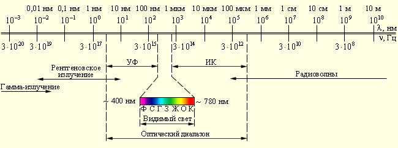

3.4. Неизменность предельных обобщений Я-центризма в истории, его пороки и последствия
Том 1 · osnovy-sociologii-tom-1.pdf · стр. 105 (кандидат) · Кандидат страницы PDF; требуется сверка · источник: PDF/DOC данной редакции.
Содержит авторские утверждения; их фактическая достоверность оценивается отдельно.
3.4. Неизменность предельных обобщений Я-центризма в истории, его пороки и последствия
Обратимся к «Книге для начального чтения» (СПб, 1878 г.) В.И. Водовозова1 (1825 — 1886), в конце XIX века предназначавшейся для самообразования россиян. В ней речь идёт о воззрениях на Объективную реальность — на понятийную категорию «Всё вообще» — древних египтян.
«Самая главная каста, управлявшая всем (т.е. нёсшая полноту внутриобщественной власти — наше пояснение при цитировании), была каста духовных или жрецов (на каком-то этапе своего исторического пути они перестали быть жрецами, и хотя сохранили название «жрецы», но были только носителями некоторых знаний и навыков в преемственности поколений, т.е. по существу были знахарями: наше уточнение при цитировании). Они предписывали и царю (т.е. фараону — наша вставка), как жить и что делать...2 Высшим божеством египтян был АМУН. В его лице соединились четыре божества: вещество, из которого состоит всё на свете, — богиня НЕТ; дух, оживляющий вещество, или сила, которая заставляет его слагаться, изменяться, действовать, — бог НЕФ; бесконечное пространство, занимаемое веществом, — богиня ПАШТ; бесконечное время, какое нам представляется при постоянных изменениях вещества, — бог СЕБЕК. Всё, что ни есть на свете, по учению египтян, происходит из вещества через действие невидимой силы, занимает пространство и изменяется во времени, и всё это таинственно соединяется в четыреедином существе АМУН».
Если отстроиться от имён древнеегипетских богов и соотноситься с понятийным аппаратом современной нам физики, то вещество соответствует «веществу» в его различных агрегатных состояниях (твёрдом, жидком, газообразном, огню-плазме); дух — большей частью силовым «природным полям»; а «пространство» и «время» так и остались неизменными мировоззренческими категориями в миропонимании большинства людей с тех времён.
То, что напомнил В. Водовозов о древнем Египте, показывает, что предельными обобщениями, предшествующими категории «Всё вообще», осознаваемыми подавляющим большинством в качестве исходных понятий об объективности Мироздания, в нынешней цивилизации на протяжении тысячелетий неизменно остаются:
1) «материя» (вещество);
2) «дух», понимаемый:
<!-- -->
и как «энергия», «сила» (в терминах нынешней физики — «силовые поля», представляемые в качестве разновидности «материи вообще» материалистическими разновидностями философии),
и как управляющее начало, т.е. «информация» и алгоритмика её преобразований;
<!-- -->
3) «пространство»;
4) «время».
Все названные четыре предельно обобщающие категории могут представляться по-разному в разных системах миропонимания: разрозненными; но могут быть и объединёнными — то в четырёх-ипостасном боге-Мироздании Амуне (древнеегипетском варианте обожествления Природы); то в «двух-ипостасном» безымянном и неперсонифицированном (не обладающим качеством субъектности, т.е. осмысленно действующей воли) «пространственно-временнóм континууме» современной нам теории относительности, содержащем в себе «материю» во всех её агрегатных состояниях, к числу которых отнесены и так называемые «силовые поля» — то, что в древности именовалось словом «дух».
И этот набор неизменен от составляющих четырёх-ипостасного Амуна древнего Египта до пространственно-временнóго континуума теории относительности и принципа «Тэта — MEST» саентологической церкви3.
Хотя слова, обозначающие эти предельно обобщающие категории, и трактовки связанных с ними понятий при более детальном их описании неоднократно изменялись на протяжении истории, но неизменным оставалось одно: информация («образ», «идея», «смысл») и алгоритмика («упорядоченность состояний и преобразований образов и идей, а также и материи в её различных агрегатных состояниях») понятийно сокрыты и неотделимы в группе предельных обобщений Я-центризма от «духа» = «энергии» = «силы» = «власти».
В явном виде информация, образность Мира, идеи и смысл не входят в набор названных предельных обобщений Я-центризма, непосредственно предшествующий обобщающим категориям «Мироздание» либо «Всё вообще». То же касается и алгоритмики преобразований материи во всех её агрегатных состояниях и алгоритмики преобразований информации.
Это — принципиальная ошибка Я-центричного мировоззрения и миропонимания, обрекающая их носителей на множество других ошибок, производных от этой принципиальной.
«Вещество» («плотная материя») при дальнейшей детализации соотносилось с четырьмя «стихиями» (в терминологии современной нам физики — агрегатными состояниями вещества: «земля» — твёрдое; «вода» — жидкое; «воздух» — газообразное; «огонь» — плазма, хотя плазма не вполне «вещество», поскольку в состоянии плазмы теряют устойчивость не только молекулы вещества, но и атомы утрачивают электроны). А невидимые для большинства людей «общеприродные поля», несущие упорядоченную энергию4 и воздействующие силой на материю во всех её агрегатных состояниях, неразделимо слились с информацией и алгоритмикой в «нематериальном духе»; природный вакуум — объективно физически вовсе не пустота, т.е. не пустое пространство, а один из видов (агрегатных состояний) материи5 — стал «пространством-вместилищем», а «время» стало знаком для обозначения некой неосязаемой непонятности.
Одной из особенностей этого мировоззрения является неспособность его носителей взглянуть на Мир с иной точки зрения, не совпадающей с их «Я-центром», что исключает и возможность осмысленного взгляда со стороны на самого себя. Эта особенность проявляется тем более ярко, чем более удалена предлагаемая им точка зрения от их «Я-центра». Если же до их сознания удаётся донести взгляд с иной точки зрения, то многие из них рассматривают это как попытку лишить их «своего Я», своеобразия индивидуальности и т.п.
И хотя мировоззрение и миропонимание с названным выше набором предельных обобщений в границах Мироздания представляется «естественным до очевидности», однако ему свойственна особенность: оно не защищено от генерации мировоззренческих ошибок, вследствие того, что узость спектра мировосприятия человека и «дальнобойность» всех его чувств ограничена, а многим людям свойственно отсутствие достоверной информации замещать в своём мировоззрении и миропонимании возведёнными в ранг истины вымыслами — как собственными, так и чужими, воспринятыми некритично.
Чтобы было понятно, насколько у́зко наше мировосприятие в обычном состоянии, обратимся к рисунку 3.4-1.
На нём надписи означают: «УФ» — «ультрафиолетовое излучение», «ИК» — «инфракрасное излучение». В нижней части рисунка — видимый для человека спектр светового излучения в диапазоне длин волн λ от 400 до 780 нанометров (1 нм = 10<sup>−9</sup> м)6.

<span class="smallcaps">Рис. 3.4-1. Оптический диапазон электромагнитных волн</span>
Механические колебания в диапазоне частот от 16 Гц до 20 кГц (длина волны в диапазоне 1,6 см — 20 м) люди в их большинстве воспринимают как звуки. Границы вещественных предметов и разделения разнородных сред воспринимают осязательно, что тоже соответствует частотному диапазону механических колебаний. Осязательно воспринимаются и вибрации, возникающие при прохождении механических колебаний звукового и незвуковых диапазонов через сре́ды и предметы, в том числе — и через организм человека.
Вследствие таких особенностей мировосприятия человека система предельных обобщений Я-центризма строится главным образом на основе разделения воспринимаемого по признакам «видимое — невидимое». Разделение объектов и субъектов тварного Мироздания по признакам «видимости — невидимости» зафиксировано и в символе веры библейских церквей имени Христа: «Верую во единаго Бога Отца, Вседержителя, Творца небу и земли, видимым же всем и невидимым…».
Т.е. осознанное мировосприятие людей в обычном состоянии бодрствования локализовано в весьма узком диапазоне частот и разновидностей природных излучений. И соответственно миропонимание, возводящее эту ограниченность мировосприятия в ранг полноты восприятия Жизни, — дефективно.
Но психическая деятельность индивида как составляющая Объективной реальности такова, что вообразимость жизни Мироздания, за пределами восприятия органов чувств сама обусловлена предельными обобщениями — первичными различиями в категории «Всё вообще».
Если набор предельных обобщений и первичных различий не соответствует Объективной реальности как таковой, то по мере «полёта воображения в пространстве и времени» будет накапливаться ошибка расхождения субъективного воображения и Объективной реальности, возрастающая тем более, чем дальше воображение «улетает в своих фантазиях» от непосредственно ощутимого «Я-центром». В результате в Мироздании «появляются» буквально понимаемые «хрустальный свод небес», «Блин-Земля, лежащая на спинах трёх гигантских китов, плавающих в безбрежном океане», «звёзды, которые светят светом, отражённым от Солнца»7 и т.п.
Если же систематическая ошибка мировоззрения действительно имеет место, то она будет в культуре передаваться, нарастая, от поколения к поколению, выражаясь в жизни цивилизации вопреки господствующей, но недееспособной благонамеренности большинства, как огрехи, проблемы, стесняющие и подавляющие многих индивидов и целые народы с их жизненными неурядицами.
В итоге спустя несколько тысяч лет развития глобальной цивилизации на основе мировоззрения разноликого мозаичного Я-центризма и калейдоскопического идиотизма (как альтернативы мозаикам Я-центризма) — при лидерстве региональной цивилизации Запада — всевозможные ошибки, проистекающие из этого мировоззрения, накопившись, выразились в наши дни в глобальном биосферно-экологическом кризисе и множестве внутриобщественных кризисов и проблем.
Главная же ошибка Я-центричного мозаичного мировоззрения была названа ранее и состоит в том, что нематериальные по своей сути информация и алгоритмика не предстают в нём в составе набора предельно обобщающих категорий, предшествующих в порядке обобщения предельным категориям «Мироздание» и «Всё вообще». И эта ошибка является главной причиной метрологической несостоятельности многих так называемых «гуманитарных» научных дисциплин — наук о человеке и человеческом обществе, и прежде всего, — психологии.
Наряду с этим, системным свойством Я-центризма является его неустойчивость в потоке жизненных обстоятельств, обусловленная тем, что мировоззрение индивида само меняется вместе с изменением обстоятельств. Вследствие этого на одни и те же вопросы Я-центризм выдаёт существенно разные, не совместимые друг с другом ответы, что обусловлено не тем, что Мир качественно изменился (Мир остался качественно тем же), а всего лишь тем, что чувственное восприятие и осмысление каких-то явлений стало «зашкаливать»; какие-то другие явления вследствие изменения обстоятельств вокруг Я-центра ушли из текущего восприятия, а бессознательные уровни психики в темпе течения событий модифицировали состав и взаимосвязи компонент мировоззрения, находящихся вблизи Я-центра.
Один из выдающихся русских педагогов XIX века.↩
Следует обратить внимание на то, что в ХХ веке учебники истории и фильмы типа «Мумия» представляют «жречество» не как власть, стоящую над властью фараона, а как интеллектуально-знахарскую «прислугу» фараона.↩
«Принцип, разработанный Хаббардом (Лафайет Рональд Хаббард, 1911 — 1986, основоположник дианетики и саентологии, создатель ряда психологических практик и организаций, включая и Саентологическую церковь, действующих на их основе — наше пояснение при цитировании), теория Тэта — MEST, причем Тэта (Θ) (...) представляет собой качество, или потенциал.
MEST (произносится: «мэст») — новое слово, состоящее из начальных букв английских слов Matter (материя), Energy (энергия), Space (пространство) и Time (время), которые являются составными частями физической вселенной», — выдержка из книги Бернда фон Виттенбурга «Шах планете Земля», с. 441 (М., «Новая планета», 1997).
«Тэта (Θ) — единица сознания, её способность созидать». Тэта определяется так: «Энергия жизни, которая воздействует на материю в физической вселенной, оживляет её, приводит в движение и изменяет» (там же, с. 433 со ссылкой на «Технический словарь дианетических и саентологических терминов»).
Как видно из приведённого, саентологическая Тэта (Θ) выделена всё из того же древнеегипетского «бога НЕФА», «духа» ипостаси Амона и определяется в саентологии как неделимый «квант духовности», свойственной человеку, лежащий в основе его природы. В некоторых эзотерических традициях Θ — символ вечной души человека (см., в частности, материалы Всеясветной грамоты). Нижняя половинка Θ соответствует земному бытию, а верхняя — периоду, разделяющему воплощения. Образ этой буквы в сходном значении символа встаёт и из афоризма К. Пруткова «Душа индейца, верящего в метемпсихозию, похожа на червячка в коконе» («∼» + «О» = Θ, а эта «формула» — символизирует зачатие в результате проникновения сперматозоида в яйцеклетку).↩
Поскольку в основе упорядоченности лежит информация, то и возник термин «энерго-информационное поле».↩
Как сообщает теория относительности и некоторые наблюдения (в частности особенности орбиты Меркурия) «кривизна» пространства в пространственно-временном континууме зависит от наличия в нём материи. Если «пространственно-временной континуум» взаимодействует с материей, то это означает одно: он — не «пустое вместилище», он — материя в одном из возможных для неё агрегатных состояний. Волны (в том числе и электромагнитные) могут распространяться только в материальной среде. Так что во «вселенной пустоты» нет, а то, что некоторыми физиками воспринимается как пустота — есть первичное агрегатное состояние материи.↩
Отметим, что в «англоязычной» радуге — только шесть цветов, поскольку часть спектра, включающая в себя голубой, синий и фиолетовый цвета, в «англоязычной» радуге распределена между двумя цветами: «blue» (голубой и синий) и «violet» (фиолетовый). И это — один из системных дефектов миропонимания на основе английского языка.↩
Обратимся к одной из основных книг «Общества сознания Кришны» «Бхагавад-гита как она есть». В ней Кришна (имя Всевышнего бога в ведической традиции) говорит: «Из Адитий Я — Вишну, из светил Я — лучезарное солнце, из Марутов Я — Маричи, и среди звёзд Я — луна» (гл. 10:21).
Читаем в комментарии к этому тексту:
«Луна наиболее выделяется ночью среди звёзд и потому она представляет Кришну. Из этого стиха можно понять, что луна является одной из звёзд; то есть звезды, мерцающие в небе, также отражают свет солнца. Теория о том, что во вселенной есть много солнц, не принимается в ведической литературе. Солнце одно, а луна и звёзды светят как отражение солнца. Поскольку “Бхагавад-гита” указывает, здесь, что луна есть одна из звёзд, мерцающие звёзды также не являются солнцами, но подобны луне».
Вообще-то, если читать этот комментарий, соотносясь с исходным текстом, то встаёт вопрос: если Солнце — единственное светило, согласно этому комментарию, то о каких иных светилах идёт речь в исходном тексте в словах Кришны «из светил Я — лучезарное солнце»? — однако такого рода несуразности для носителей калейдоскопа и Я-центризма незаметны. Но и фраза «из светил Я — лучезарное солнце» в масштабах обозримого Космоса — тоже Я-центризм, но не личностного масштаба локализации, а общепланетарного — Земного, тем более, что Солнце — звезда, далеко не самая выдающаяся по своим параметрам (массе, диаметру, мощности излучения, яркости) среди звёзд, известных астрономии наших дней.↩